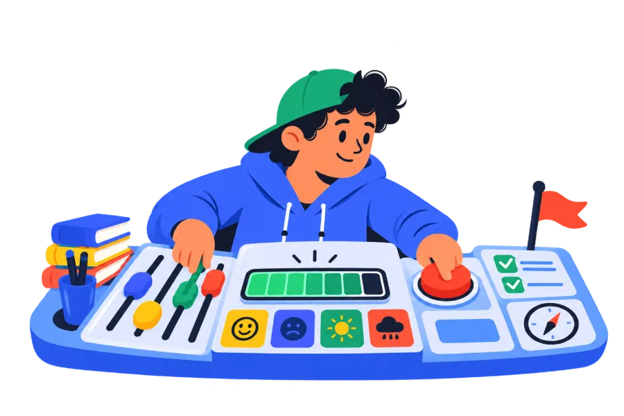
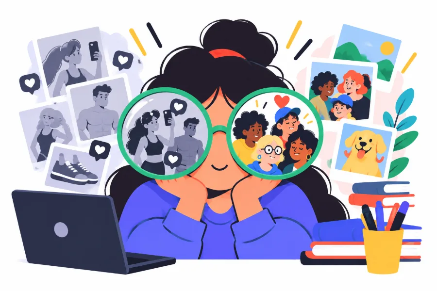
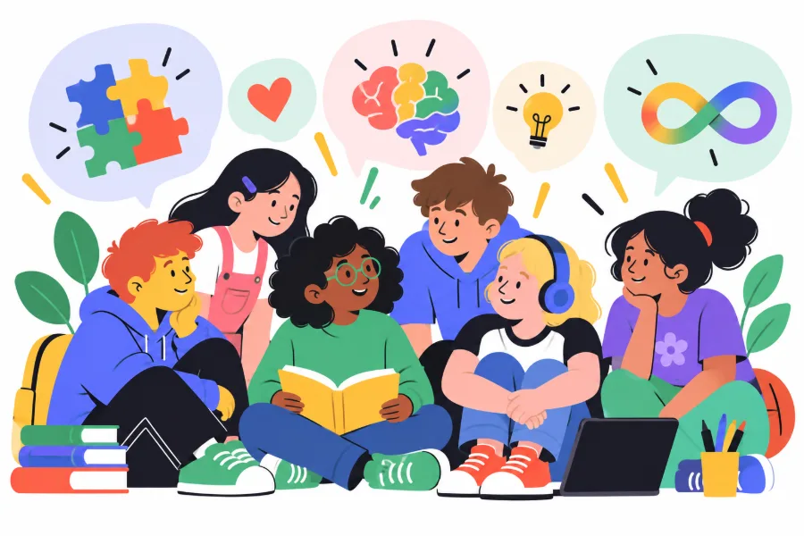
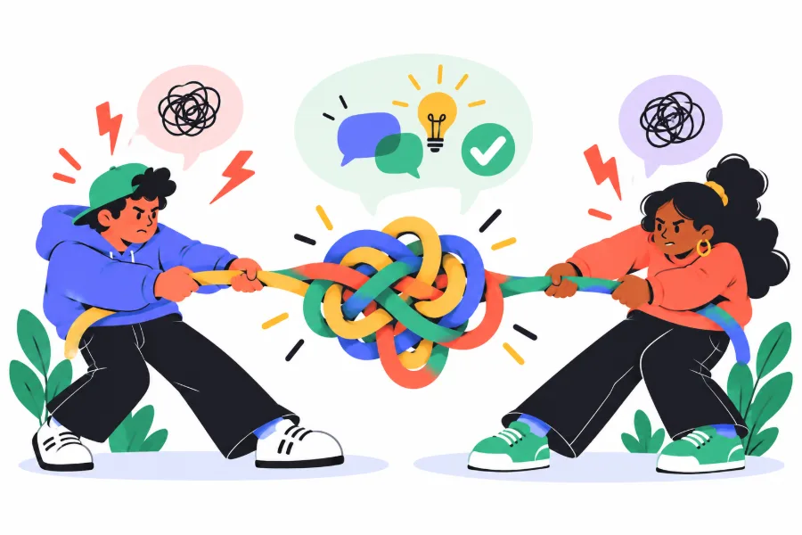
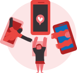
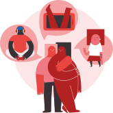
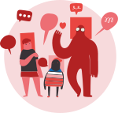

Caixa d'eines: Adolescència Mode ON
Quan entenem millor el que viuen els nostres fills i filles, és més fàcil acompanyar-los. Un taller per comprendre l'adolescència i cuidar el benestar emocional de tota la família.
Formacions i acompanyament per a famílies, adolescents i professionals.
Dissenyo i imparteixo tallers i formacions per a famílies, infants, adolescents i professionals de l'àmbit educatiu i social.
Les propostes aborden temes com l'adolescència, la comunicació familiar, la prevenció de les addiccions, la neurodiversitat, la convivència i el benestar emocional.
Cada taller és una oportunitat per aturar-nos, compartir experiències, fer-nos preguntes i descobrir maneres diferents d'entendre allò que vivim. L'objectiu no és oferir receptes universals, sinó generar espais d'aprenentatge participatius, propers i respectuosos.
Busques una proposta per a…
Cada públic té la seva pàgina, amb els tallers que hi encaixen i com organitzar-los.
Tallers pensats per acompanyar les famílies en els reptes del dia a dia, sobretot durant la preadolescència i l'adolescència.
Quan entenem millor el que viuen els nostres fills i filles, és més fàcil acompanyar-los. Un taller per comprendre l'adolescència i cuidar el benestar emocional de tota la família.

Entendre és el primer pas per poder acompanyar. Un programa de dues sessions (Entendre i Acompanyar) per comunicar-se amb més proximitat, posar límits amb respecte i reforçar l'autoestima i el vincle familiar.

Amb Sergi Garcia i Ariadna Busqué. La prevenció comença molt abans del primer consum, comprenent la realitat actual de les drogues.
Tallers dirigits directament a l'alumnat de primària i secundària, per fer a l'aula amb el grup classe.

Comprendre què ens passa és el primer pas per poder-ho transformar. Aquest taller acompanya els i les adolescents en una etapa plena de canvis, oferint-los eines per conèixer-se millor i créixer amb confiança.

Amb Steph Watson. Vivim envoltats d'imatges que influeixen en la manera com entenem els cossos, les relacions i el món.

Cada persona aprèn, pensa i es relaciona amb el món d'una manera diferent. Un taller per comprendre què és la neurodiversitat i descobrir com construir espais més inclusius i accessibles per a tothom.

Els conflictes formen part del dia a dia. Eines perquè els adolescents aprenguin a comunicar-se de manera assertiva, posar límits amb respecte i gestionar els desacords des del diàleg.
A més dels tallers que dissenyo i imparteixo, participo en projectes i programes de formació i prevenció impulsats per altres entitats. Aquestes col·laboracions em permeten treballar amb famílies i comunitats educatives en temes com l'adolescència, les pantalles i el benestar emocional.
Actualment imparteixo els Tallers Connecta de la Fundació Salut i Comunitat, un programa de prevenció i promoció de la salut adreçat a famílies i centres educatius. No són tallers propis: la informació i la manera de sol·licitar-los són al web del programa.

Taller del programa Tallers Connecta de la Fundació Salut i Comunitat, per acompanyar les famílies en la decisió sobre el primer mòbil i la pressió social que hi ha al voltant.

Taller del programa Tallers Connecta que obre un espai de diàleg entre famílies sobre l'ús de les pantalles i com abordar-ne els reptes conjuntament.

Taller del programa Tallers Connecta que convida les famílies a mirar l'adolescència des d'una perspectiva positiva, reduint la conflictivitat quotidiana.

Darrer taller del cicle Tallers Connecta, orientat a consolidar els aprenentatges anteriors i traduir-los en accions concretes dins la família.
Els tallers combinen explicacions accessibles, dinàmiques de participació, reflexió individual i conversa en grup. El contingut s'adapta al públic destinatari i busca connectar els coneixements amb situacions quotidianes.
Neixen de les necessitats reals que observo en escoles, famílies i equips professionals. Més enllà dels continguts, tots comparteixen una mateixa manera de treballar: crear espais participatius, propers i lliures de judicis, on cada persona pugui compartir les seves experiències, plantejar dubtes i reflexionar des del respecte.
No crec en receptes universals ni en solucions màgiques. Crec en el valor de comprendre què ens passa, escoltar altres mirades i descobrir recursos que cada família, professional o adolescent pugui fer seus.
Moltes vegades, el primer pas no és trobar una solució, sinó descobrir que allò que ens preocupa té una explicació i que no estem sols vivint-ho. A partir d'aquí, és molt més fàcil començar a construir canvis.
Cada centre educatiu, AFA o entitat té unes necessitats diferents. Per això, les propostes poden adaptar-se al perfil de les persones participants i als objectius de l'activitat, mantenint el sentit i els continguts essencials de cada taller.
Els tallers es poden realitzar de manera independent o combinar-se per crear itineraris adaptats a les necessitats de cada centre, entitat o grup.
Hi ha dos grans grups: tallers per a famílies (mares, pares i altres referents d'infants preadolescents i adolescents) i tallers per a l'alumnat, de 6è de primària a 4t d'ESO segons el taller. Els poden organitzar centres educatius, AFAs i AMPAs, ajuntaments i entitats.
Cada taller té un públic de referència, indicat a la seva fitxa. Dins d'aquest marc, els continguts i les dinàmiques s'ajusten a l'edat i a les característiques del grup; per exemple, el taller de neurodiversitat s'adapta segons el curs. Si busques una proposta per a una altra franja d'edat, explica-m'ho i en parlem.
Sí. Els tallers per a l'alumnat estan pensats per fer-se a l'aula amb el grup classe, i els tallers per a famílies també es poden organitzar al mateix centre, des de la direcció o des de l'AFA.
Des del formulari de contacte. Indica qui organitza l'activitat, a qui s'adreça, el taller o el tema que t'interessa i les dates aproximades. A partir d'aquí et faré arribar una proposta.
Una xerrada se centra sobretot en l'exposició d'un tema, amb un temps final per a preguntes. Un taller dona més pes a la participació: dinàmiques, reflexió i conversa en grup. Les propostes d'aquesta pàgina tenen format de taller, però la part expositiva pot tenir més o menys pes segons el grup i el temps disponible.
Explica'm qui sou i què us agradaria treballar, i et faré arribar una proposta.